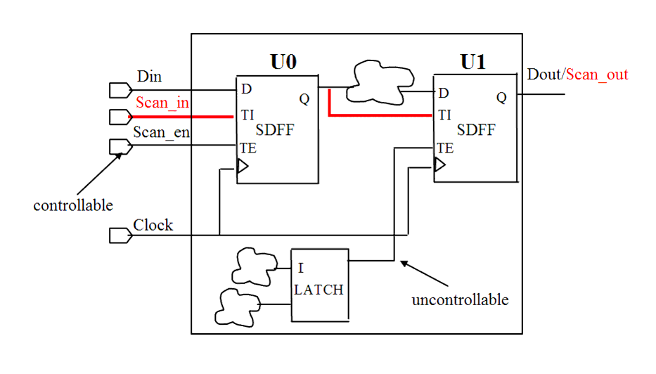

| Description | This rule fires when Leda detects a scan-enable signal that is not controllable at the top-level of the design. Making scan enable signals controllable from the top-level module improves the stability of the circuit in test mode, and the performance of scan chain insertion and automatic test pattern generation (ATPG). |
| Policy | DESIGN |
| Ruleset | DFT |
| Language | VHDL/Verilog |
| Type | Hardware |
| Severity | Error |
This is an example of invalid Verilog code, followed by a circuit diagram that illustrates the problem:
module ntl_dft52_top(Clock, Reset, Set, Scan_in, Scan_en, Din, Dout); input Scan_en; //Scan-enable signal, input port of top level ... wire Scan_en_int; //a signal generated by interior logic ... //Scan DFF -- SDFF SDFF U0(.D(Din), .CP(Clock), .TI(Scan_in), .TE(Scan_en), .Q(Dout_int)); // OK. scan-enable pin of U0 is controllable from scan-enable port // of top-level SDFF U1(.D(Dout_int), .CP(Clock), .TI(Dout_int), .TE(Scan_en_int), .Q(Dout)); // NTL_DFT53 fires -- scan-enable pin of U1 is uncontrollable // from scan-enable port of top-level endmodule